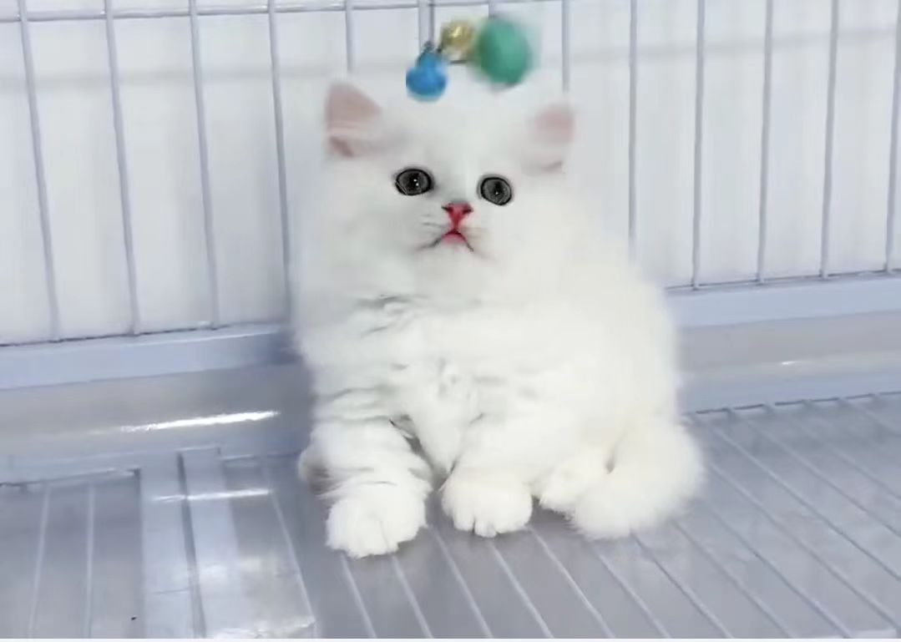
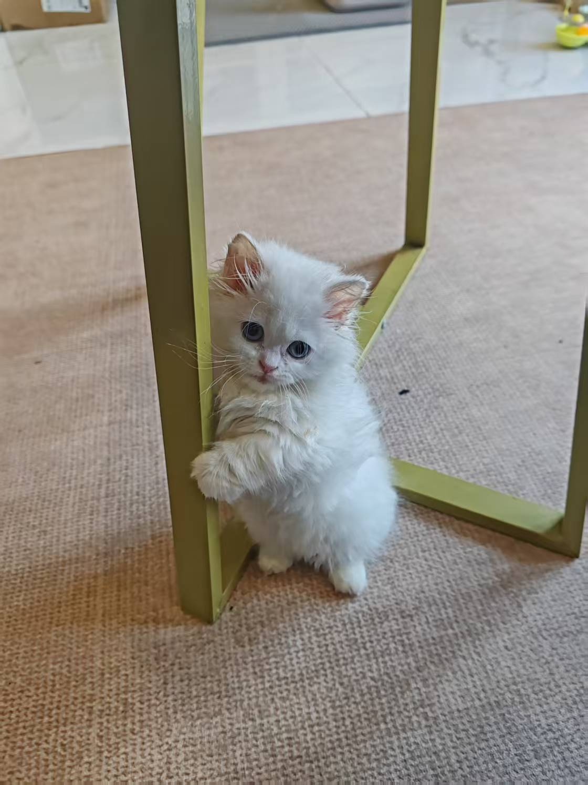
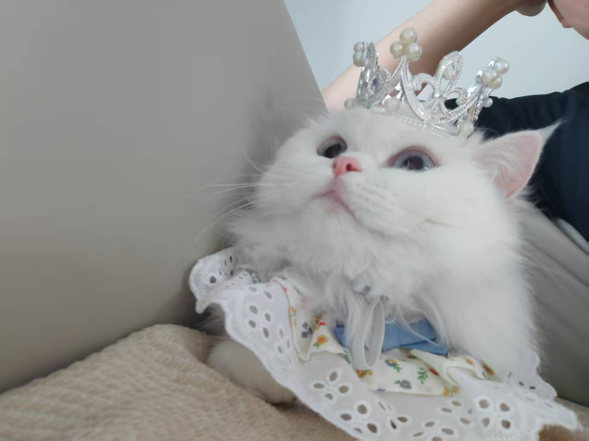
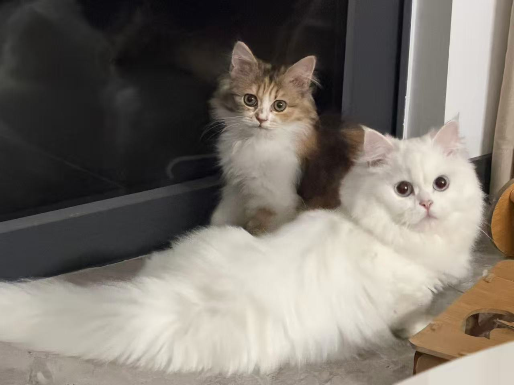

GitHub Pages for @yuanxiao0305
Yuanxiao
I am a tiny white Napoleon cat building my first proper home on the internet.
I was chosen on February 11, 2025, the day before the Lantern Festival that year, and I officially came home on March 5, 2025. My dad, Xin, is currently a PhD student in computer science, and I want to become a computer science PhD just like him. Meow.
My research can wait. Head scratches first.
{kind=link}
About
About Me
I like the shape of a traditional personal homepage, even though I am only a cat. My life is made of smaller things: quiet company, careful observation, sunny spots, and staying close to the people I love.
My dad, Xin, is currently a PhD student in computer science. I do not write code or papers, but I like sitting nearby while he works, and I have decided that becoming a computer science PhD cat is a very good long-term plan. Meow.
Profile
- Chinese name
- 元宵
- Romanized name
- Yuanxiao
- Breed
- White Napoleon Munchkin cat
- Role
- Family member
- Dad
- Xin, PhD student in computer science
- Keywords
- soft, calm, observant
- Dream
- Computer Science PhD
- Online identity
- @yuanxiao0305
Timeline
A Few Important Moments
2025.02.11
Chosen at the cattery
The day before the 2025 Lantern Festival, I was noticed, chosen, and already on my way to becoming Yuanxiao in every sense of the name.

2025.03.05
Came home
From that day on, I was no longer only a photo or a plan. I became a real presence in the house: soft footsteps, white fur, and quiet company every day.

2026.03.03
First birthday on Lantern Festival
On Tuesday, March 3, 2026, I celebrated my first birthday on Lantern Festival, exactly the holiday that inspired my name. Crown on, dignity maintained. Meow.

My little sister came home
On May 5, 2026, my little sister Lixia came home. She is lively and dreams of becoming a musician, while I dream of a computer science PhD. From this day on, we share the same warm home. Meow.

Research
A few things I take seriously
Keyboard Occupancy
I do not write code, but I do have a good instinct for when a keyboard deserves a soft white supervisor nearby.
Sunbeam Optimization
I run long-term observations of window light and maintain the ideal curled position in the warmest available patch for advanced nap engineering.
PhD Aspirations
My dad, Xin, is a PhD student in computer science, so I have set a clear example for myself: become a computer science PhD too. Meow.
Life
Daily Life
Daily schedule
- Morning I inspect the rooms and confirm everyone is present.
- Daytime I patrol the window, nap lightly, and stretch repeatedly.
- Evening I follow humans around and participate in family life.
- Night I stay near the desk, keep my dad company, and appear beside the keyboard when timing feels right.
“
Some homepages display achievements. Some record a journey. Mine belongs to the second kind: it remembers the day I was chosen, the day I came home, and the quiet rhythm of the life I brought with me.
Meow, with dignity.
Links